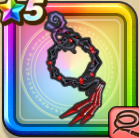

ナイトメアチェーン
攻略班 7.5点 / ねむり打ちしんくう打ちメダパニバットウィップカラミティストーム※錬成で強化可能
くわしい特徴
【レベル別習得スキル】 Lv1【魔法戦士】すばやさ+5 Lv1ねむり打ち（消費MP：12）催眠をかけ敵全体に威力120%の体技ダメージを与えたまに眠りをさそう Lv10しんくう打ち（消費MP：16）敵全体にこうげき力とこうげき魔力を込めた100%のバギ属性体技ダメージを与える Lv15メダパニ（消費MP：12）敵1体を混乱させる Lv20バットウィップ（消費MP：22）敵全体にこうげき力とこうげき魔力を込めた125％のドルマ属性体技ダメージを与える Lv30カラミティストーム（消費MP：28）敵1体にこうげき力とこうげき魔力を込めた240％のバギ属性体技ダメージを与え、フォースブレイク成功時MPを20回復する Lv35物質系へのダメージ+5% Lv40悪魔系へのダメージ+5% Lv45【夜間】バットウィップのダメージ+5% Lv50攻撃力+12錬成スキル改1物質系へのダメージ+10%改2カラミティストーム改（消費MP：30）敵1体に攻・魔複合威力270%のバギ属性体技ダメージを与え、フォースブレイクまたはフォースチャージ成功時MPを30回復する改3【夜】カラミティストーム改のダメージ+5%改4錬成ぶき特別演出解放・メガモン討伐結果発表時に特別演出が追加・武器の見た目に特別なエフェクトが追加 【限界突破スキル】 1凸スキルの斬撃・体技ダメージ+5% 2凸スキルの斬撃・体技ダメージ+5% 3凸スキルの斬撃・体技ダメージ+5% 4凸スキルの斬撃・体技ダメージ+5%